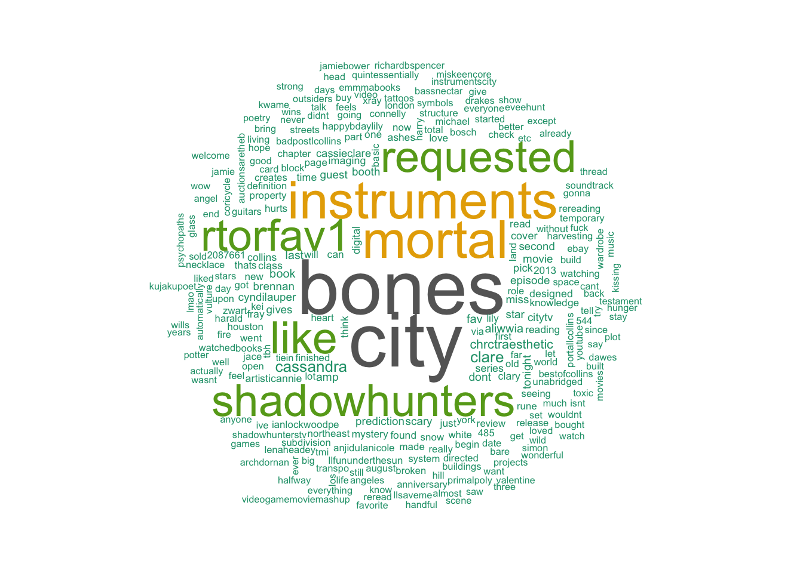

Author: Cassandra Clare
“Sarcasm is the last refuge of the imaginatively bankrupt.”
― Cassandra Clare, City of Bones
When fifteen-year-old Clary Fray heads out to the Pandemonium Club in New York City, she hardly expects to witness a murder― much less a murder committed by three teenagers covered with strange tattoos and brandishing bizarre weapons. Then the body disappears into thin air. It’s hard to call the police when the murderers are invisible to everyone else and when there is nothing―not even a smear of blood―to show that a boy has died. Or was he a boy?
This is Clary’s first meeting with the Shadowhunters, warriors dedicated to ridding the earth of demons. It’s also her first encounter with Jace, a Shadowhunter who looks a little like an angel and acts a lot like a jerk. Within twenty-four hours Clary is pulled into Jace’s world with a vengeance, when her mother disappears and Clary herself is attacked by a demon. But why would demons be interested in ordinary mundanes like Clary and her mother? And how did Clary suddenly get the Sight? The Shadowhunters would like to know…
Exotic and gritty, exhilarating and utterly gripping, Cassandra Clare’s ferociously entertaining fantasy takes readers on a wild ride that they will never want to end.

# Run Twitter Search
tweets <- searchTwitter("City of Bones", n=500, lang="en")
head(tweets, 20)## [[1]]
## [1] "BurnsiesBytes: The City of Bones by Cassandra Clare https://t.co/4vFqcAWjda"
##
## [[2]]
## [1] "horseshitcall: i lied i hate the entire city of winnipegAS I WAS TUPING THIS BONES SCORED https://t.co/js51xmw3U4"
##
## [[3]]
## [1] "SouffleLumiere: I liked a @YouTube video https://t.co/5Wj2gjTva2 CITY OF BONES + CITY OF ASHES LIVESHOW"
##
## [[4]]
## [1] "LilLotteReads: I liked a @YouTube video https://t.co/yJtxGEO3Oq CITY OF BONES + CITY OF ASHES LIVESHOW"
##
## [[5]]
## [1] "davnvers: RT @bestofcollins: The Mortal Instruments: City Of Bones\nRole: Clary Fray\nRelease date: August 21, 2013\nDirected by Harald Zwart https://t.…"
##
## [[6]]
## [1] "hcrpermcintyre: 66% done with City of Bones, by Cassandra Clare: I am honestly dreading rereading a cert... https://t.co/xrf8M7QY2i"
##
## [[7]]
## [1] "jon_snow_420: i think i'm getting an anxiety attack because i can't understand how lily cole is the same person in the moth diaries and city of bones"
##
## [[8]]
## [1] "pandemoniumclub: 14 Reasons Why Valentine Deserves To Be Locked Up In The City Of Bones (via @ShadowhuntersTV) https://t.co/N5UxQ5Me7S"
##
## [[9]]
## [1] "booksand_things: RT @adashofash12: Don't forget our City of Bones + City of Ashes liveshow is tonight at 8pm EST on my channel! I hope some of you can make…"
##
## [[10]]
## [1] "CayteaCrisis: @ShadowhuntersTV 4 days of reading City of Bones, and my life is about to end due to a TV show I am #DoneWithLife"
##
## [[11]]
## [1] "SLAYHEMMO: @SLAYHEMMO plus the guys that play Daniel and Cam are pretty hot so I mean hopefully they make it into a show like city of bones"
##
## [[12]]
## [1] "fj091101: Just finished reading city of bones(again) and every time the said luke I saw @isaiahmustafa face"
##
## [[13]]
## [1] "adashofash12: Don't forget our City of Bones + City of Ashes liveshow is tonight at 8pm EST on my channel! I hope some of you can make it! ❤️\u27b0"
##
## [[14]]
## [1] "LowdermilkL: \"It's easier to confront a threat as a mass, a group, not individuals who must be evaluated one by one.\"- C. Clark, City of Bones, p. 201"
##
## [[15]]
## [1] "jeannap23: \xed\xa0\xbd\xed\xb3\xb7 Shadowhunters 2x03 / The Mortal Instruments: City of Bones (2013) https://t.co/mXLCDJkumU"
##
## [[16]]
## [1] "jeannap23: \xed\xa0\xbd\xed\xb3\xb7 Shadowhunters 1x04 / The Mortal Instruments: City of Bones (2013) https://t.co/FshJ4V6GXV"
##
## [[17]]
## [1] "RadioHRHLive: #NowPlaying City of Bones by Blaze Bayley | Listen Live: https://t.co/CPrTojGYx5 and join the chatroom!"
##
## [[18]]
## [1] "itsloanie: Clary wearing sweatpants and converse around the institute is so clary at least she's not wearing skechers like in city of bones"
##
## [[19]]
## [1] "Ylematc: @RobMSheehan I noticed that ur role in #MortalEnginesMondays is similar to City of Bones movie cuz u play the innocent apprentice"
##
## [[20]]
## [1] "Bokbloggerno: City of Bones av Cassandra Clare. 2007. Walker: 442s. - via @bokbloggerno https://t.co/yNBCl4BISc"